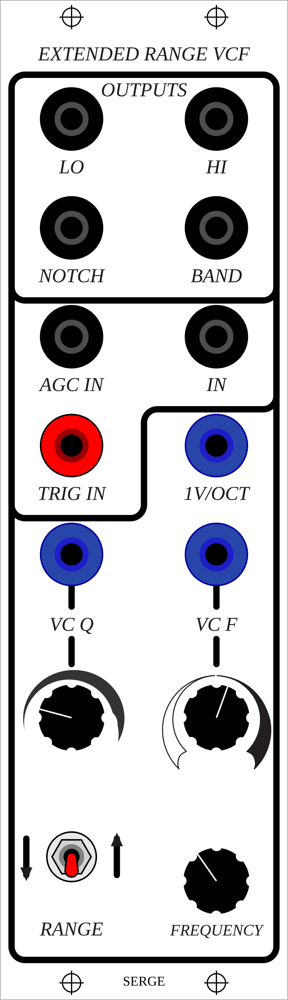

Extended Range VCF / Variable Q VCF
VCFQ · VCFX · CGS112
Serge's resonant voltage-controlled filter with low, high, band and notch outputs over a very wide range.
- Design
- Serge Tcherepnin; CGS112 by Ken Stone
- Function
- Filter
- Panel widths
- 2"
- Build options
- 2
Panels in this repo


How it works
A resonant filter with low-pass, high-pass, band-pass and notch outputs. Q can be set high enough to ring or oscillate; VC Q and VC F control resonance and frequency.
Ken Stone's CGS112 builds it from three CGS108 Serge gain cells on a carrier board. The gain-cell schematic is not published.
Controls and jacks
| Name | Type | What it does |
|---|---|---|
| LOW, HIGH, BAND, NOTCH | outputs | Filter responses. |
| IN 1, IN 2 | inputs | Audio. |
| TRIG | input | Pings the filter. |
| VC Q, VC F, 1V/OCT | inputs | Control. |
| Q, frequency knobs | knobs | Manual settings. |
Build options
Ken Stone CGS112 Serge VC Resonance Filter
- Offered as
- PCB from Elby Designs; schematic, parts list and construction notes on Ken Stone's page
- PCB
- Elby Designs: CGS512 VCFQ (current version of the CGS112)
- Schematic
- availableCGS112 Serge VC Resonance Filter schematic
- BOM
- availableCGS112 Serge VC Resonance Filter parts list (in the BOM spreadsheet below)
Elby now supplies the Serge gain cells for the CGS512 only as pre-built, factory-calibrated sub-assemblies with the PCB; they are no longer a DIY kit.
The carrier needs three CGS108 gain cells; the CGS108 parts list below is for one.
Low-Gain LGE112 Extended Range VCF (VCFX/VCFQ)
- Offered as
- Assembled module or DIY PCBs
- Format
- 4U Serge, Loudest Warning-style mounting
- Schematic
- availableLow-Gain schematics (Google Drive, linked below)
- BOM
- availableLow-Gain BOM (Google Drive, linked below)
- Mouser cart
- Low-Gain Mouser cart: LGE112 Q Filter
The maker's own shared Mouser project: open it and choose "Buy selected items". Check what it leaves out (often pots, knobs, jacks and headers). - Documents
- LGE112 Main PCB BOM
LGE112 Main PCB schematic
LGE112C I/O PCB schematic
LGE108 Gain Cell schematic
The main PCB can come with three LGE108 gain cells already built (SMD). You still fit each cell's 100K trimmer and headers, then calibrate them with the tester circuit on the product page.
Low-Gain's Mouser cart for this kit leaves out the knobs, pots, headers and other mechanical parts.
Low-Gain boards set their own jack positions; check them against the panel you use.
Ken Stone's Serge-derived designs may be built for personal use only; Serge Tcherepnin keeps all rights to his circuits. Schematics, parts lists and PCBs belong to their designers and sellers, so these pages link to them rather than copying them.
Bill of materials
Spreadsheet: extended-range-vcf.csv (CSV; opens in Excel, Numbers or Google Sheets). It lists the parts for every build option: Ken Stone's parts lists, and the parts data from Low-Gain's, Prism's and Elby's own BOMs where they publish one.
The makers' parts lists were copied into the spreadsheet automatically from their PDFs and Mouser carts (values, quantities and reference designators only; each row links its source). Check them against the maker's current BOM before ordering, and read the maker's notes there: they are not repeated here.
Order from Mouser: extended-range-vcf__cgs108_vca.csv (13 lines, about $21.00 at single-unit prices), extended-range-vcf__cgs112_vcfq.csv (26 lines, about $28.11 at single-unit prices), extended-range-vcf__lowgain_cart_lge112.csv (34 lines, about $47.42 at single-unit prices). Files ending _cart are made from a maker's own Mouser cart. Upload one at Mouser's BOM tool (it reads the Mouser and manufacturer part number columns). Parts Mouser doesn't stock are listed in extended-range-vcf__cgs108_vca_not_at_mouser.csv, extended-range-vcf__cgs112_vcfq_not_at_mouser.csv, extended-range-vcf__lowgain_cart_lge112_not_at_mouser.csv.
Makers' Mouser carts: Low-Gain LGE112 Extended Range VCF (VCFX/VCFQ): LGE112 Q Filter. Each opens the maker's shared Mouser project, where you can add the whole list to your cart. They are kept by the makers, so they follow the current board revision, but some of their parts were out of stock or obsolete on 21 Nov 2026. The _cart upload files above are the same lists with those parts swapped for in-stock equivalents, so use them if Mouser shows a part as backordered.
Pots and knobs from Tayda: extended-range-vcf__cgs112_vcfq.csv (1 lines, about $1.26). The pots (16 mm, solder lugs, 1/4" round shaft) and Davies 1900H-style knobs cost less at Tayda Electronics than at Mouser, so they are listed here with a link to each Tayda product instead of in the Mouser file.
Or genuine Davies knobs from Mouser: the Tayda knob is a Davies 1900H clone ($0.42). If you want the real Davies Molding 1900-H (Mouser 5164-1900-H, about $4.36 each; 5164-1900-L has an indicator line), upload knobs/extended-range-vcf__cgs112_vcfq.csv (3 knobs) at Mouser's BOM tool instead and leave the knob line out of the Tayda order.
All builds (6 lines)
| Section | Type | Value / part | Qty | Notes |
|---|---|---|---|---|
| Front panel (STS / modern) | Panel hardware | Banana jack, black | 6 | 4 mm |
| Front panel (STS / modern) | Panel hardware | Banana jack, blue | 3 | 4 mm |
| Front panel (STS / modern) | Panel hardware | Banana jack, red | 1 | 4 mm |
| Front panel (STS / modern) | Panel hardware | Potentiometer + knob | 3 | value from the board BOM |
| Front panel (STS / modern) | Panel hardware | Toggle switch | 1 | type from the board BOM |
| Front panel (STS / modern) | Panel hardware | Knob | 3 | one per pot |
Ken Stone CGS112 Serge VC Resonance Filter (78 lines)
| Section | Type | Value / part | Qty | Notes |
|---|---|---|---|---|
| CGS112 board | Potentiometer / trimmer | 100Ω trimmer | 1 | from https://open4umodular.github.io/synthpanel/modules/cgs112_vcfq.html |
| CGS112 board | Resistor | 330Ω | 6 | from https://open4umodular.github.io/synthpanel/modules/cgs112_vcfq.html |
| CGS112 board | Resistor | 1k | 1 | from https://open4umodular.github.io/synthpanel/modules/cgs112_vcfq.html |
| CGS112 board | Resistor | 2k | 1 | from https://open4umodular.github.io/synthpanel/modules/cgs112_vcfq.html |
| CGS112 board | Resistor | 15k | 2 | from https://open4umodular.github.io/synthpanel/modules/cgs112_vcfq.html |
| CGS112 board | Resistor | 22k | 2 | from https://open4umodular.github.io/synthpanel/modules/cgs112_vcfq.html |
| CGS112 board | Resistor | 47k | 5 | from https://open4umodular.github.io/synthpanel/modules/cgs112_vcfq.html |
| CGS112 board | Resistor | 100k | 12 | from https://open4umodular.github.io/synthpanel/modules/cgs112_vcfq.html |
| CGS112 board | Resistor | 110k | 1 | from https://open4umodular.github.io/synthpanel/modules/cgs112_vcfq.html |
| CGS112 board | Resistor | 150k | 1 | from https://open4umodular.github.io/synthpanel/modules/cgs112_vcfq.html |
| CGS112 board | Resistor | 220k | 1 | from https://open4umodular.github.io/synthpanel/modules/cgs112_vcfq.html |
| CGS112 board | Resistor | 330k | 1 | from https://open4umodular.github.io/synthpanel/modules/cgs112_vcfq.html |
| CGS112 board | Resistor | 1.5M | 1 | from https://open4umodular.github.io/synthpanel/modules/cgs112_vcfq.html |
| CGS112 board | Capacitor | 22pF | 2 | from https://open4umodular.github.io/synthpanel/modules/cgs112_vcfq.html |
| CGS112 board | Capacitor | 220pF MKT or ceramic | 2 | from https://open4umodular.github.io/synthpanel/modules/cgs112_vcfq.html |
| CGS112 board | Capacitor | 220pF styrene | 2 | from https://open4umodular.github.io/synthpanel/modules/cgs112_vcfq.html |
| CGS112 board | Capacitor | 1nF (=0.001uF) MKT or better | 1 | from https://open4umodular.github.io/synthpanel/modules/cgs112_vcfq.html |
| CGS112 board | Capacitor | 100nF (=0.1uF) MKT or better | 3 | from https://open4umodular.github.io/synthpanel/modules/cgs112_vcfq.html |
| CGS112 board | Capacitor | 100nF (=0.1uF) 1206 SMT | 3 | from https://open4umodular.github.io/synthpanel/modules/cgs112_vcfq.html |
| CGS112 board | Capacitor | 10uF electrolytic | 2 | from https://open4umodular.github.io/synthpanel/modules/cgs112_vcfq.html |
| CGS112 board | Semiconductor | 1N4148 | 5 | from https://open4umodular.github.io/synthpanel/modules/cgs112_vcfq.html |
| CGS112 board | Semiconductor | TL072 | 1 | from https://open4umodular.github.io/synthpanel/modules/cgs112_vcfq.html |
| CGS112 board | Semiconductor | TL074 | 1 | from https://open4umodular.github.io/synthpanel/modules/cgs112_vcfq.html |
| CGS112 board | Misc | Ferrite Bead | 2 | from https://open4umodular.github.io/synthpanel/modules/cgs112_vcfq.html |
| CGS112 board | Misc | DPDT switch | 1 | from https://open4umodular.github.io/synthpanel/modules/cgs112_vcfq.html |
| CGS112 board | Misc | MTA-156 connector 4Pin | 1 | from https://open4umodular.github.io/synthpanel/modules/cgs112_vcfq.html |
| CGS112 board | Misc | MTA-156 header 4Pin | 1 | from https://open4umodular.github.io/synthpanel/modules/cgs112_vcfq.html |
| CGS112 board | Misc | CGS108 submodule | 3 | from https://open4umodular.github.io/synthpanel/modules/cgs112_vcfq.html |
| CGS112 board | Misc | CGS112 VER1.0 PCB set | 1 | from https://open4umodular.github.io/synthpanel/modules/cgs112_vcfq.html |
| CGS108 board | Resistor | 100Ω | 1 | from https://open4umodular.github.io/synthpanel/modules/cgs108_vca.html |
| CGS108 board | Resistor | 330Ω | 1 | from https://open4umodular.github.io/synthpanel/modules/cgs108_vca.html |
| CGS108 board | Resistor | 8.2k | 2 | from https://open4umodular.github.io/synthpanel/modules/cgs108_vca.html |
| CGS108 board | Potentiometer / trimmer | 100k trimmer | 1 | from https://open4umodular.github.io/synthpanel/modules/cgs108_vca.html |
| CGS108 board | Resistor | 150k | 2 | from https://open4umodular.github.io/synthpanel/modules/cgs108_vca.html |
| CGS108 board | Resistor | 1.5M | 1 | from https://open4umodular.github.io/synthpanel/modules/cgs108_vca.html |
| CGS108 board | Capacitor | 5pF ceramic | 1 | from https://open4umodular.github.io/synthpanel/modules/cgs108_vca.html |
| CGS108 board | Capacitor | 47pF ceramic | 1 | from https://open4umodular.github.io/synthpanel/modules/cgs108_vca.html |
| CGS108 board | Capacitor | 10nF (=0.01uF) Monolithic ceramic, MKS or MKT | 2 | from https://open4umodular.github.io/synthpanel/modules/cgs108_vca.html |
| CGS108 board | Semiconductor | 1N4148 | 2 | from https://open4umodular.github.io/synthpanel/modules/cgs108_vca.html |
| CGS108 board | Semiconductor | BC557B or C/2N4250/PN4250 | 2 | from https://open4umodular.github.io/synthpanel/modules/cgs108_vca.html |
| CGS108 board | Semiconductor | BC547B or C/2N5089 | 2 | from https://open4umodular.github.io/synthpanel/modules/cgs108_vca.html |
| CGS108 board | Semiconductor | TL072 or LF353 | 1 | from https://open4umodular.github.io/synthpanel/modules/cgs108_vca.html |
| CGS108 board | Misc | 8 pin 90° 0.1" header strip | 1 | from https://open4umodular.github.io/synthpanel/modules/cgs108_vca.html |
| CGS108 board | Misc | CGS108 VER1.0 PCB | 1 | from https://open4umodular.github.io/synthpanel/modules/cgs108_vca.html |
| Elby CGS512 - VCFQ kit | Capacitor | Do | 1 | C204; Do Not Fit; from Elby's kit BOM: https://www.elby-designs.com/webtek/cgs/serge/cgs512/kc-7-cgs512.pdf |
| Elby CGS512 - VCFQ kit | Capacitor | 22pF | 2 | C205,C206; 22pF 10% Ceramic; from Elby's kit BOM: https://www.elby-designs.com/webtek/cgs/serge/cgs512/kc-7-cgs512.pdf |
| Elby CGS512 - VCFQ kit | Capacitor | 47pF | 2 | C103,C104; 47pF 5% Ceramic; from Elby's kit BOM: https://www.elby-designs.com/webtek/cgs/serge/cgs512/kc-7-cgs512.pdf |
| Elby CGS512 - VCFQ kit | Capacitor | 220pF | 2 | C102,C105; 220pF 5% Ceramic; from Elby's kit BOM: https://www.elby-designs.com/webtek/cgs/serge/cgs512/kc-7-cgs512.pdf |
| Elby CGS512 - VCFQ kit | Capacitor | 220pF | 2 | C202,C208; 220pF 2.5% Polystyrene; from Elby's kit BOM: https://www.elby-designs.com/webtek/cgs/serge/cgs512/kc-7-cgs512.pdf |
| Elby CGS512 - VCFQ kit | Capacitor | 1nF | 1 | C101; 1nF 63V Polyester; from Elby's kit BOM: https://www.elby-designs.com/webtek/cgs/serge/cgs512/kc-7-cgs512.pdf |
| Elby CGS512 - VCFQ kit | Capacitor | 100nF | 3 | C201,C203,C207; 100nF 63V Polyester; from Elby's kit BOM: https://www.elby-designs.com/webtek/cgs/serge/cgs512/kc-7-cgs512.pdf |
| Elby CGS512 - VCFQ kit | Capacitor | 100nF | 6 | C3,C4,C5,C6,C7,C8; 100nF Ceramic; from Elby's kit BOM: https://www.elby-designs.com/webtek/cgs/serge/cgs512/kc-7-cgs512.pdf |
| Elby CGS512 - VCFQ kit | Capacitor | 10uF | 2 | C1,C2; 10uF 35V Electrolytic; from Elby's kit BOM: https://www.elby-designs.com/webtek/cgs/serge/cgs512/kc-7-cgs512.pdf |
| Elby CGS512 - VCFQ kit | Hardware | KK396 - 3-way Straight - Locking Header | 1 | J3; from Elby's kit BOM: https://www.elby-designs.com/webtek/cgs/serge/cgs512/kc-7-cgs512.pdf |
| Elby CGS512 - VCFQ kit | Hardware | KK396 - 3-way Crimp Housing | 1 | J3; from Elby's kit BOM: https://www.elby-designs.com/webtek/cgs/serge/cgs512/kc-7-cgs512.pdf |
| Elby CGS512 - VCFQ kit | Hardware | CRIMP - KK396 | 3 | J3^3; from Elby's kit BOM: https://www.elby-designs.com/webtek/cgs/serge/cgs512/kc-7-cgs512.pdf |
| Elby CGS512 - VCFQ kit | Hardware | 1x8 Pin Receptacle | 3 | GC1,GC2,GC3; from Elby's kit BOM: https://www.elby-designs.com/webtek/cgs/serge/cgs512/kc-7-cgs512.pdf |
| Elby CGS512 - VCFQ kit | Hardware | 8-pin IC Socket 0.3inch | 3 | U101,U102,U201; from Elby's kit BOM: https://www.elby-designs.com/webtek/cgs/serge/cgs512/kc-7-cgs512.pdf |
| Elby CGS512 - VCFQ kit | Diode | 5.1V 5% 500mW | 2 | D201,D202NB:SeeBuildGuide; from Elby's kit BOM: https://www.elby-designs.com/webtek/cgs/serge/cgs512/kc-7-cgs512.pdf |
| Elby CGS512 - VCFQ kit | Diode | 1N4148 | 5 | D101,D102,D103,D104,D105; from Elby's kit BOM: https://www.elby-designs.com/webtek/cgs/serge/cgs512/kc-7-cgs512.pdf |
| Elby CGS512 - VCFQ kit | Hardware | M2.5 x 12mm Spacer Threaded | 3 | GC1,GC2,GC3; from Elby's kit BOM: https://www.elby-designs.com/webtek/cgs/serge/cgs512/kc-7-cgs512.pdf |
| Elby CGS512 - VCFQ kit | Hardware | M2.5 x 6mm Pan Head Bolt | 6 | GC1^2,GC2^2,GC3^2; from Elby's kit BOM: https://www.elby-designs.com/webtek/cgs/serge/cgs512/kc-7-cgs512.pdf |
| Elby CGS512 - VCFQ kit | IC | TL072 Dual JFET Opamp | 2 | U101,U201; from Elby's kit BOM: https://www.elby-designs.com/webtek/cgs/serge/cgs512/kc-7-cgs512.pdf |
| Elby CGS512 - VCFQ kit | IC | LT1013CP - Dual Precision Opamp | 1 | U102; from Elby's kit BOM: https://www.elby-designs.com/webtek/cgs/serge/cgs512/kc-7-cgs512.pdf |
| Elby CGS512 - VCFQ kit | Hardware | Ferrite Bead - 5A | 2 | L1,L2; from Elby's kit BOM: https://www.elby-designs.com/webtek/cgs/serge/cgs512/kc-7-cgs512.pdf |
| Elby CGS512 - VCFQ kit | Resistor | TEMPCO | 1 | R114NB:SeeBuildGuide; TEMPCO - 2K 0.17W 5% 3300ppm; from Elby's kit BOM: https://www.elby-designs.com/webtek/cgs/serge/cgs512/kc-7-cgs512.pdf |
| Elby CGS512 - VCFQ kit | Resistor | 330R | 6 | R112,R120,R203,R204,R205,R213; 330R 1% 0.5W Metal Film; from Elby's kit BOM: https://www.elby-designs.com/webtek/cgs/serge/cgs512/kc-7-cgs512.pdf |
| Elby CGS512 - VCFQ kit | Resistor | 1K0 | 1 | R102; 1K0 1% 0.5W Metal Film; from Elby's kit BOM: https://www.elby-designs.com/webtek/cgs/serge/cgs512/kc-7-cgs512.pdf |
| Elby CGS512 - VCFQ kit | Resistor | 15K | 2 | R111,R119; 15K 1% 0.5W Metal Film; from Elby's kit BOM: https://www.elby-designs.com/webtek/cgs/serge/cgs512/kc-7-cgs512.pdf |
| Elby CGS512 - VCFQ kit | Resistor | 22K | 2 | R116,R117; 22K 1% 0.5W Metal Film; from Elby's kit BOM: https://www.elby-designs.com/webtek/cgs/serge/cgs512/kc-7-cgs512.pdf |
| Elby CGS512 - VCFQ kit | Resistor | 47K | 6 | R101,R110,R113,R206,R210,R212; 47K 1% 0.5W Metal Film; from Elby's kit BOM: https://www.elby-designs.com/webtek/cgs/serge/cgs512/kc-7-cgs512.pdf |
| Elby CGS512 - VCFQ kit | Resistor | 100K | 10 | R107,R108,R109,R115,R201,R202,R207,R208,R209,R211; 100K 1% 0.5W Metal Film; from Elby's kit BOM: https://www.elby-designs.com/webtek/cgs/serge/cgs512/kc-7-cgs512.pdf |
| Elby CGS512 - VCFQ kit | Resistor | 110K | 1 | R118; 110K 1% 0.5W Metal Film; from Elby's kit BOM: https://www.elby-designs.com/webtek/cgs/serge/cgs512/kc-7-cgs512.pdf |
| Elby CGS512 - VCFQ kit | Resistor | 150K | 1 | R103; 150K 1% 0.5W Metal Film; from Elby's kit BOM: https://www.elby-designs.com/webtek/cgs/serge/cgs512/kc-7-cgs512.pdf |
| Elby CGS512 - VCFQ kit | Resistor | 220K | 1 | R106; 220K 1% 0.5W Metal Film; from Elby's kit BOM: https://www.elby-designs.com/webtek/cgs/serge/cgs512/kc-7-cgs512.pdf |
| Elby CGS512 - VCFQ kit | Resistor | 330K | 1 | R104; 330K 1% 0.5W Metal Film; from Elby's kit BOM: https://www.elby-designs.com/webtek/cgs/serge/cgs512/kc-7-cgs512.pdf |
| Elby CGS512 - VCFQ kit | Resistor | 1M5 | 1 | R105; 1M5 1% 0.5W Metal Film; from Elby's kit BOM: https://www.elby-designs.com/webtek/cgs/serge/cgs512/kc-7-cgs512.pdf |
| Elby CGS512 - VCFQ kit | Trimmer | 100R MTV Cermet | 1 | P104; from Elby's kit BOM: https://www.elby-designs.com/webtek/cgs/serge/cgs512/kc-7-cgs512.pdf |
Low-Gain LGE112 Extended Range VCF (VCFX/VCFQ) (100 lines)
| Section | Type | Value / part | Qty | Notes |
|---|---|---|---|---|
| Low-Gain LGE112 Main PCB | Capacitor | 10uF@50V | 2 | C1,C2; Electrolytic Cap 2mm LS; Main board: LGE112; from Low-Gain's BOM: https://drive.google.com/file/d/1ze9JmyhqdI30iBn0_bClZVWrdKr-NrmV/view |
| Low-Gain LGE112 Main PCB | Capacitor | 100n | 5 | C3,C4,C5,C19,C20; MLCC 50V SMT 0805/1206; Main board: LGE112; from Low-Gain's BOM: https://drive.google.com/file/d/1ze9JmyhqdI30iBn0_bClZVWrdKr-NrmV/view |
| Low-Gain LGE112 Main PCB | Capacitor | 1n | 1 | C6; C0G Ceramic or Film Cap 5mm LS; Main board: LGE112; from Low-Gain's BOM: https://drive.google.com/file/d/1ze9JmyhqdI30iBn0_bClZVWrdKr-NrmV/view |
| Low-Gain LGE112 Main PCB | Capacitor | 220p | 2 | C7,C18; FILM Capacitor 5mm LS; Main board: LGE112; from Low-Gain's BOM: https://drive.google.com/file/d/1ze9JmyhqdI30iBn0_bClZVWrdKr-NrmV/view |
| Low-Gain LGE112 Main PCB | Capacitor | 220p | 2 | C11,C14; C0G Ceramic or Film Cap 5mm LS; Main board: LGE112; from Low-Gain's BOM: https://drive.google.com/file/d/1ze9JmyhqdI30iBn0_bClZVWrdKr-NrmV/view |
| Low-Gain LGE112 Main PCB | Capacitor | 100n | 3 | C8,C12,C15; C0G Ceramic or Film Cap 5mm LS; Main board: LGE112; from Low-Gain's BOM: https://drive.google.com/file/d/1ze9JmyhqdI30iBn0_bClZVWrdKr-NrmV/view |
| Low-Gain LGE112 Main PCB | Capacitor | CZ | 1 | C9; Ceramic Cap 5mm LS; Main board: LGE112; from Low-Gain's BOM: https://drive.google.com/file/d/1ze9JmyhqdI30iBn0_bClZVWrdKr-NrmV/view |
| Low-Gain LGE112 Main PCB | Capacitor | 22p | 2 | C10,C13; Ceramic Cap 5mm LS; Main board: LGE112; from Low-Gain's BOM: https://drive.google.com/file/d/1ze9JmyhqdI30iBn0_bClZVWrdKr-NrmV/view |
| Low-Gain LGE112 Main PCB | Capacitor | CX | 1 | C16; Ceramic Cap 5mm LS; Main board: LGE112; from Low-Gain's BOM: https://drive.google.com/file/d/1ze9JmyhqdI30iBn0_bClZVWrdKr-NrmV/view |
| Low-Gain LGE112 Main PCB | Capacitor | CY | 1 | C17; Ceramic Cap 5mm LS; Main board: LGE112; from Low-Gain's BOM: https://drive.google.com/file/d/1ze9JmyhqdI30iBn0_bClZVWrdKr-NrmV/view |
| Low-Gain LGE112 Main PCB | Diode | 1N4148 | 5 | D1,D2,D3,D4,D5; General Signal Diode; Main board: LGE112; from Low-Gain's BOM: https://drive.google.com/file/d/1ze9JmyhqdI30iBn0_bClZVWrdKr-NrmV/view |
| Low-Gain LGE112 Main PCB | Diode | 1N4733A | 2 | D6,D7; 5V1 ZENER; Main board: LGE112; from Low-Gain's BOM: https://drive.google.com/file/d/1ze9JmyhqdI30iBn0_bClZVWrdKr-NrmV/view |
| Low-Gain LGE112 Main PCB | Resistor | 10R0 | 2 | FB1,FB2; 1% Metal-Film 1/4W Resistor; Main board: LGE112; from Low-Gain's BOM: https://drive.google.com/file/d/1ze9JmyhqdI30iBn0_bClZVWrdKr-NrmV/view |
| Low-Gain LGE112 Main PCB | Connector | 0.100” (2.54mm) 4P HDR | 1 | J1; Power Header; Main board: LGE112; from Low-Gain's BOM: https://drive.google.com/file/d/1ze9JmyhqdI30iBn0_bClZVWrdKr-NrmV/view |
| Low-Gain LGE112 Main PCB | Resistor | 47K | 5 | R1,R9,R17,R19,R25; 1% Metal-Film 1/4W Resistor; Main board: LGE112; from Low-Gain's BOM: https://drive.google.com/file/d/1ze9JmyhqdI30iBn0_bClZVWrdKr-NrmV/view |
| Low-Gain LGE112 Main PCB | Resistor | 1K | 1 | R2; 1% Metal-Film 1/4W Resistor; Main board: LGE112; from Low-Gain's BOM: https://drive.google.com/file/d/1ze9JmyhqdI30iBn0_bClZVWrdKr-NrmV/view |
| Low-Gain LGE112 Main PCB | Resistor | 150K | 1 | R3; 1% Metal-Film 1/4W Resistor; Main board: LGE112; from Low-Gain's BOM: https://drive.google.com/file/d/1ze9JmyhqdI30iBn0_bClZVWrdKr-NrmV/view |
| Low-Gain LGE112 Main PCB | Resistor | 1.5M | 1 | R4; 1% Metal-Film 1/4W Resistor; Main board: LGE112; from Low-Gain's BOM: https://drive.google.com/file/d/1ze9JmyhqdI30iBn0_bClZVWrdKr-NrmV/view |
| Low-Gain LGE112 Main PCB | Resistor | 330K | 1 | R5; 1% Metal-Film 1/4W Resistor; Main board: LGE112; from Low-Gain's BOM: https://drive.google.com/file/d/1ze9JmyhqdI30iBn0_bClZVWrdKr-NrmV/view |
| Low-Gain LGE112 Main PCB | Resistor | 220K | 1 | R6; 1% Metal-Film 1/4W Resistor; Main board: LGE112; from Low-Gain's BOM: https://drive.google.com/file/d/1ze9JmyhqdI30iBn0_bClZVWrdKr-NrmV/view |
| Low-Gain LGE112 Main PCB | Resistor | 100K | 11 | R7,R8,R10,R11,R13,R14,R15,R21,R22,R28,R29; 1% Metal-Film 1/4W Resistor; Main board: LGE112; from Low-Gain's BOM: https://drive.google.com/file/d/1ze9JmyhqdI30iBn0_bClZVWrdKr-NrmV/view |
| Low-Gain LGE112 Main PCB | Resistor | 330 | 6 | R12,R16,R18,R20,R24,R36; 1% Metal-Film 1/4W Resistor; Main board: LGE112; from Low-Gain's BOM: https://drive.google.com/file/d/1ze9JmyhqdI30iBn0_bClZVWrdKr-NrmV/view |
| Low-Gain LGE112 Main PCB | Resistor | 15K | 2 | R23,R34; 1% Metal-Film 1/4W Resistor; Main board: LGE112; from Low-Gain's BOM: https://drive.google.com/file/d/1ze9JmyhqdI30iBn0_bClZVWrdKr-NrmV/view |
| Low-Gain LGE112 Main PCB | Resistor | 100K | 1 | R26*; 1% Metal-Film 1/4W Resistor; Main board: LGE112; from Low-Gain's BOM: https://drive.google.com/file/d/1ze9JmyhqdI30iBn0_bClZVWrdKr-NrmV/view |
| Low-Gain LGE112 Main PCB | Resistor | 22K | 2 | R30,R31; 1% Metal-Film 1/4W Resistor; Main board: LGE112; from Low-Gain's BOM: https://drive.google.com/file/d/1ze9JmyhqdI30iBn0_bClZVWrdKr-NrmV/view |
| Low-Gain LGE112 Main PCB | Resistor | 110K | 1 | R32; 1% Metal-Film 1/4W Resistor; Main board: LGE112; from Low-Gain's BOM: https://drive.google.com/file/d/1ze9JmyhqdI30iBn0_bClZVWrdKr-NrmV/view |
| Low-Gain LGE112 Main PCB | Resistor | 2K | 1 | R33; 1% Metal-Film 1/4W Resistor; Main board: LGE112; from Low-Gain's BOM: https://drive.google.com/file/d/1ze9JmyhqdI30iBn0_bClZVWrdKr-NrmV/view |
| Low-Gain LGE112 Main PCB | Resistor | 182K | 1 | R35; 1% Metal-Film 1/4W Resistor; Main board: LGE112; from Low-Gain's BOM: https://drive.google.com/file/d/1ze9JmyhqdI30iBn0_bClZVWrdKr-NrmV/view |
| Low-Gain LGE112 Main PCB | IC | TL074 | 1 | U1; TL074CN (DIP-14); Main board: LGE112; from Low-Gain's BOM: https://drive.google.com/file/d/1ze9JmyhqdI30iBn0_bClZVWrdKr-NrmV/view |
| Low-Gain LGE112 Main PCB | IC | TL072 | 1 | U2; TL072CP (DIP-8); Main board: LGE112; from Low-Gain's BOM: https://drive.google.com/file/d/1ze9JmyhqdI30iBn0_bClZVWrdKr-NrmV/view |
| Low-Gain LGE112 Main PCB | IC | LGE108 | 3 | U6,U7,U8; LGE108 GAIN CELL; Main board: LGE112; from Low-Gain's BOM: https://drive.google.com/file/d/1ze9JmyhqdI30iBn0_bClZVWrdKr-NrmV/view |
| Low-Gain LGE112 Main PCB | Other | VR1 (Will eventually change to TR1) 100R | 1 | V/OCT(3296W); Main board: LGE112; from Low-Gain's BOM: https://drive.google.com/file/d/1ze9JmyhqdI30iBn0_bClZVWrdKr-NrmV/view |
| Low-Gain LGE112 Main PCB | Trimmer | VR2 (Will eventually change to TR2) 1M | 1 | TR-MOD Trim (3362P); Main board: LGE112; from Low-Gain's BOM: https://drive.google.com/file/d/1ze9JmyhqdI30iBn0_bClZVWrdKr-NrmV/view |
| Low-Gain LGE112 Main PCB | Jack | INPUT | 1 | J1; Cinch Connectivity 108 Series Banana Jack Pick your color; I/O Board: LGE112C; from Low-Gain's BOM: https://drive.google.com/file/d/1ze9JmyhqdI30iBn0_bClZVWrdKr-NrmV/view |
| Low-Gain LGE112 Main PCB | Jack | VC FREQ | 1 | J2; Cinch Connectivity 108 Series Banana Jack Pick your color; I/O Board: LGE112C; from Low-Gain's BOM: https://drive.google.com/file/d/1ze9JmyhqdI30iBn0_bClZVWrdKr-NrmV/view |
| Low-Gain LGE112 Main PCB | Jack | V/OCT | 2 | J3,J4; Cinch Connectivity 108 Series Banana Jack Pick your color; I/O Board: LGE112C; from Low-Gain's BOM: https://drive.google.com/file/d/1ze9JmyhqdI30iBn0_bClZVWrdKr-NrmV/view |
| Low-Gain LGE112 Main PCB | Jack | TRIG | 1 | J5; Cinch Connectivity 108 Series Banana Jack Pick your color; I/O Board: LGE112C; from Low-Gain's BOM: https://drive.google.com/file/d/1ze9JmyhqdI30iBn0_bClZVWrdKr-NrmV/view |
| Low-Gain LGE112 Main PCB | Jack | AGC (AUTOMATIC GAIN CIRCUIT) Cinch Connectivity 108 Series Banana Jack Pick your color | 1 | J6; I/O Board: LGE112C; from Low-Gain's BOM: https://drive.google.com/file/d/1ze9JmyhqdI30iBn0_bClZVWrdKr-NrmV/view |
| Low-Gain LGE112 Main PCB | Jack | VC Q | 1 | J7; Cinch Connectivity 108 Series Banana Jack Pick your color; I/O Board: LGE112C; from Low-Gain's BOM: https://drive.google.com/file/d/1ze9JmyhqdI30iBn0_bClZVWrdKr-NrmV/view |
| Low-Gain LGE112 Main PCB | Jack | NOTCH | 1 | J8; Cinch Connectivity 108 Series Banana Jack Pick your color; I/O Board: LGE112C; from Low-Gain's BOM: https://drive.google.com/file/d/1ze9JmyhqdI30iBn0_bClZVWrdKr-NrmV/view |
| Low-Gain LGE112 Main PCB | Jack | HIGH | 1 | J9; Cinch Connectivity 108 Series Banana Jack Pick your color; I/O Board: LGE112C; from Low-Gain's BOM: https://drive.google.com/file/d/1ze9JmyhqdI30iBn0_bClZVWrdKr-NrmV/view |
| Low-Gain LGE112 Main PCB | Jack | LOW | 1 | J10; Cinch Connectivity 108 Series Banana Jack Pick your color; I/O Board: LGE112C; from Low-Gain's BOM: https://drive.google.com/file/d/1ze9JmyhqdI30iBn0_bClZVWrdKr-NrmV/view |
| Low-Gain LGE112 Main PCB | Jack | BAND | 1 | J11; Cinch Connectivity 108 Series Banana Jack Pick your color; I/O Board: LGE112C; from Low-Gain's BOM: https://drive.google.com/file/d/1ze9JmyhqdI30iBn0_bClZVWrdKr-NrmV/view |
| Low-Gain LGE112 Main PCB | Resistor | 100K | 1 | R1; 1% Metal-Film 1/4W Resistor; I/O Board: LGE112C; from Low-Gain's BOM: https://drive.google.com/file/d/1ze9JmyhqdI30iBn0_bClZVWrdKr-NrmV/view |
| Low-Gain LGE112 Main PCB | Potentiometer | B100K | 5 | VR1,VR2,VR3,VR4,VR5; 9mm Alpha style potentiometer; I/O Board: LGE112C; from Low-Gain's BOM: https://drive.google.com/file/d/1ze9JmyhqdI30iBn0_bClZVWrdKr-NrmV/view |
| Low-Gain LGE112 Main PCB | Knob | Knobs | 5 | DAVIES 1900H; I/O Board: LGE112C; from Low-Gain's BOM: https://drive.google.com/file/d/1ze9JmyhqdI30iBn0_bClZVWrdKr-NrmV/view |
| Low-Gain LGE112 Main PCB | Hardware | M3X6 BUTTON HEAD SCREW | 8 | TAYDA: A-4372; I/O Board: LGE112C; from Low-Gain's BOM: https://drive.google.com/file/d/1ze9JmyhqdI30iBn0_bClZVWrdKr-NrmV/view |
| Low-Gain LGE112 Main PCB | Hardware | M3 SPLIT WASHER | 8 | I/O Board: LGE112C; from Low-Gain's BOM: https://drive.google.com/file/d/1ze9JmyhqdI30iBn0_bClZVWrdKr-NrmV/view |
| Low-Gain LGE112 Main PCB | Hardware | M3X11 F-F HEX STAND OFFS | 4 | (These are 12mm not 11mm, but will work); I/O Board: LGE112C; from Low-Gain's BOM: https://drive.google.com/file/d/1ze9JmyhqdI30iBn0_bClZVWrdKr-NrmV/view |
| Low-Gain LGE112 Main PCB | Connector | MALE 2.54MM HEADERS 40PIN | 2 | TAYDA: A-197; I/O Board: LGE112C; from Low-Gain's BOM: https://drive.google.com/file/d/1ze9JmyhqdI30iBn0_bClZVWrdKr-NrmV/view |
| Low-Gain LGE112 Main PCB | Connector | FEMALE 2.54MM HEADERS 40PIN | 2 | TAYDA: A-196; I/O Board: LGE112C; from Low-Gain's BOM: https://drive.google.com/file/d/1ze9JmyhqdI30iBn0_bClZVWrdKr-NrmV/view |
| Low-Gain LGE112 Main PCB | Other | Gain Cell: LGE108 | 0 | (Gain cell pcb); I/O Board: LGE112C; from Low-Gain's BOM: https://drive.google.com/file/d/1ze9JmyhqdI30iBn0_bClZVWrdKr-NrmV/view |
| Low-Gain LGE112 Main PCB | Trimmer | Trimmer | 3 | 100K; I/O Board: LGE112C; from Low-Gain's BOM: https://drive.google.com/file/d/1ze9JmyhqdI30iBn0_bClZVWrdKr-NrmV/view |
| Low-Gain LGE112 Main PCB | Capacitor | 220nF | 1 | C1; Film Cap 5mm LS; I/O Board: LGE108T (Gain cell tester pcb); from Low-Gain's BOM: https://drive.google.com/file/d/1ze9JmyhqdI30iBn0_bClZVWrdKr-NrmV/view |
| Low-Gain LGE112 Main PCB | Capacitor | 10uF@50V | 2 | C35,C42; Electrolytic Cap 2mm LS; I/O Board: LGE108T (Gain cell tester pcb); from Low-Gain's BOM: https://drive.google.com/file/d/1ze9JmyhqdI30iBn0_bClZVWrdKr-NrmV/view |
| Low-Gain LGE112 Main PCB | Capacitor | 100n | 2 | C36,C41; MLCC 50V SMT 0805/1206; I/O Board: LGE108T (Gain cell tester pcb); from Low-Gain's BOM: https://drive.google.com/file/d/1ze9JmyhqdI30iBn0_bClZVWrdKr-NrmV/view |
| Low-Gain LGE112 Main PCB | Connector | 0.100” 2.54mm male header | 1 | HDR_1; LGE108 board header; I/O Board: LGE108T (Gain cell tester pcb); from Low-Gain's BOM: https://drive.google.com/file/d/1ze9JmyhqdI30iBn0_bClZVWrdKr-NrmV/view |
| Low-Gain LGE112 Main PCB | Connector | 0.100” (2.54mm) 4P HDR | 1 | HDR_2; Power Header; I/O Board: LGE108T (Gain cell tester pcb); from Low-Gain's BOM: https://drive.google.com/file/d/1ze9JmyhqdI30iBn0_bClZVWrdKr-NrmV/view |
| Low-Gain LGE112 Main PCB | Jack | Audio Output | 1 | J1; Cinch Connectivity 108 Series Banana Jack Pick your color; I/O Board: LGE108T (Gain cell tester pcb); from Low-Gain's BOM: https://drive.google.com/file/d/1ze9JmyhqdI30iBn0_bClZVWrdKr-NrmV/view |
| Low-Gain LGE112 Main PCB | Jack | Audio Input | 1 | J2; Cinch Connectivity 108 Series Banana Jack Pick your color; I/O Board: LGE108T (Gain cell tester pcb); from Low-Gain's BOM: https://drive.google.com/file/d/1ze9JmyhqdI30iBn0_bClZVWrdKr-NrmV/view |
| Low-Gain LGE112 Main PCB | Resistor | 100K | 3 | R1,R3,R4; 1% Metal-Film 1/4W Resistor; I/O Board: LGE108T (Gain cell tester pcb); from Low-Gain's BOM: https://drive.google.com/file/d/1ze9JmyhqdI30iBn0_bClZVWrdKr-NrmV/view |
| Low-Gain LGE112 Main PCB | Resistor | 330R | 1 | R2; 1% Metal-Film 1/4W Resistor; I/O Board: LGE108T (Gain cell tester pcb); from Low-Gain's BOM: https://drive.google.com/file/d/1ze9JmyhqdI30iBn0_bClZVWrdKr-NrmV/view |
| Low-Gain LGE112 Main PCB | Resistor | 5K6 | 1 | R5; 1% Metal-Film 1/4W Resistor; I/O Board: LGE108T (Gain cell tester pcb); from Low-Gain's BOM: https://drive.google.com/file/d/1ze9JmyhqdI30iBn0_bClZVWrdKr-NrmV/view |
| Low-Gain LGE112 Main PCB | Resistor | 10R | 2 | R69,R70; 1% Metal-Film 1/4W Resistor; I/O Board: LGE108T (Gain cell tester pcb); from Low-Gain's BOM: https://drive.google.com/file/d/1ze9JmyhqdI30iBn0_bClZVWrdKr-NrmV/view |
| Low-Gain LGE112 Main PCB | Switch | DPDT Sub-MiniToggle (ON-ON) | 1 | SW_1; Range Switch; I/O Board: LGE108T (Gain cell tester pcb); from Low-Gain's BOM: https://drive.google.com/file/d/1ze9JmyhqdI30iBn0_bClZVWrdKr-NrmV/view |
| Low-Gain LGE112 Main PCB | Potentiometer | B100K | 1 | VR1; 9mm Alpha style potentiometer; I/O Board: LGE108T (Gain cell tester pcb); from Low-Gain's BOM: https://drive.google.com/file/d/1ze9JmyhqdI30iBn0_bClZVWrdKr-NrmV/view |
| Low-Gain LGE112 Mouser cart | Capacitor | 0.1uF | 5 | MLCC SMD 0805 0.1uF 50V; from Low-Gain's Mouser cart: https://www.mouser.com/ProjectManager/ProjectDetail.aspx?AccessID=0ee94f9448 |
| Low-Gain LGE112 Mouser cart | Capacitor | 10uF | 2 | Elec 50V 10uF Radial; in-stock replacement for 80-ESL106M050AC3AA (10uF 50V: the KEMET part was backordered with a long lead time); from Low-Gain's Mouser cart: https://www.mouser.com/ProjectManager/ProjectDetail.aspx?AccessID=0ee94f9448 |
| Low-Gain LGE112 Mouser cart | Capacitor | 220pF | 4 | MLCC RAD 100V 220pF C0G 5% LS:5mm; from Low-Gain's Mouser cart: https://www.mouser.com/ProjectManager/ProjectDetail.aspx?AccessID=0ee94f9448 |
| Low-Gain LGE112 Mouser cart | Capacitor | 1000pF | 1 | Film 100volts 1000pF 10% LS 5mm; from Low-Gain's Mouser cart: https://www.mouser.com/ProjectManager/ProjectDetail.aspx?AccessID=0ee94f9448 |
| Low-Gain LGE112 Mouser cart | Capacitor | 0.1uF | 3 | MLCC RAD 100V 0.1uF C0G 5% LS:5mm; from Low-Gain's Mouser cart: https://www.mouser.com/ProjectManager/ProjectDetail.aspx?AccessID=0ee94f9448 |
| Low-Gain LGE112 Mouser cart | Capacitor | 33pF | 3 | MLCC RAD 100V 33pF C0G 5% LS:5mm; from Low-Gain's Mouser cart: https://www.mouser.com/ProjectManager/ProjectDetail.aspx?AccessID=0ee94f9448 |
| Low-Gain LGE112 Mouser cart | Capacitor | 22pF | 2 | MLCC RAD 100V 22pF C0G 5% LS:5mm; in-stock replacement for 810-FG28C0G2A220JNT6 (22pF: the JNT06 packing was out of stock; JNT00 is the same part); from Low-Gain's Mouser cart: https://www.mouser.com/ProjectManager/ProjectDetail.aspx?AccessID=0ee94f9448 |
| Low-Gain LGE112 Mouser cart | Switch | 1N4148 | 5 | Small Signal Switching Diode; from Low-Gain's Mouser cart: https://www.mouser.com/ProjectManager/ProjectDetail.aspx?AccessID=0ee94f9448 |
| Low-Gain LGE112 Mouser cart | Diode | 1N4733A | 2 | Zener Diode 5.1V 1W; from Low-Gain's Mouser cart: https://www.mouser.com/ProjectManager/ProjectDetail.aspx?AccessID=0ee94f9448 |
| Low-Gain LGE112 Mouser cart | IC | LHA-04-TS | 1 | 4P locking header straight; from Low-Gain's Mouser cart: https://www.mouser.com/ProjectManager/ProjectDetail.aspx?AccessID=0ee94f9448 |
| Low-Gain LGE112 Mouser cart | Resistor | 10R | 2 | R 10Ohms 1/4W 1% Metal Film; from Low-Gain's Mouser cart: https://www.mouser.com/ProjectManager/ProjectDetail.aspx?AccessID=0ee94f9448 |
| Low-Gain LGE112 Mouser cart | Resistor | 47k | 10 | R 47KOhms 1/4W 1% Metal Film; from Low-Gain's Mouser cart: https://www.mouser.com/ProjectManager/ProjectDetail.aspx?AccessID=0ee94f9448 |
| Low-Gain LGE112 Mouser cart | Resistor | 1k | 1 | R 1K ohm 1/4W 1%; from Low-Gain's Mouser cart: https://www.mouser.com/ProjectManager/ProjectDetail.aspx?AccessID=0ee94f9448 |
| Low-Gain LGE112 Mouser cart | Resistor | 150k | 1 | R 150Kohm 1% 1/4W Metal Film; from Low-Gain's Mouser cart: https://www.mouser.com/ProjectManager/ProjectDetail.aspx?AccessID=0ee94f9448 |
| Low-Gain LGE112 Mouser cart | Resistor | 1M5 | 1 | R 1.5M OHM 1/4W 1%; from Low-Gain's Mouser cart: https://www.mouser.com/ProjectManager/ProjectDetail.aspx?AccessID=0ee94f9448 |
| Low-Gain LGE112 Mouser cart | Resistor | 100k | 12 | R 100K OHM 1/4W 1%; from Low-Gain's Mouser cart: https://www.mouser.com/ProjectManager/ProjectDetail.aspx?AccessID=0ee94f9448 |
| Low-Gain LGE112 Mouser cart | Resistor | 330k | 1 | R 330K OHM 1/4W 1%; from Low-Gain's Mouser cart: https://www.mouser.com/ProjectManager/ProjectDetail.aspx?AccessID=0ee94f9448 |
| Low-Gain LGE112 Mouser cart | Resistor | MFR-25FTF52-220K | 1 | R 220K 1/4W 1% Metal Film; from Low-Gain's Mouser cart: https://www.mouser.com/ProjectManager/ProjectDetail.aspx?AccessID=0ee94f9448 |
| Low-Gain LGE112 Mouser cart | Resistor | 330R | 10 | R 330 OHM 1/4W 1%; from Low-Gain's Mouser cart: https://www.mouser.com/ProjectManager/ProjectDetail.aspx?AccessID=0ee94f9448 |
| Low-Gain LGE112 Mouser cart | Resistor | 15k | 2 | R 15K OHM 1/4W 1%; from Low-Gain's Mouser cart: https://www.mouser.com/ProjectManager/ProjectDetail.aspx?AccessID=0ee94f9448 |
| Low-Gain LGE112 Mouser cart | Resistor | 33k | 1 | R 33K OHM 1/4W 1%; from Low-Gain's Mouser cart: https://www.mouser.com/ProjectManager/ProjectDetail.aspx?AccessID=0ee94f9448 |
| Low-Gain LGE112 Mouser cart | Resistor | 22k1 | 2 | R 22.1K OHM 1/4W 1%; from Low-Gain's Mouser cart: https://www.mouser.com/ProjectManager/ProjectDetail.aspx?AccessID=0ee94f9448 |
| Low-Gain LGE112 Mouser cart | Resistor | 110k | 1 | R 110K OHM 1/4W 1%; from Low-Gain's Mouser cart: https://www.mouser.com/ProjectManager/ProjectDetail.aspx?AccessID=0ee94f9448 |
| Low-Gain LGE112 Mouser cart | Resistor | 2k | 1 | R 2K ohm 1/4W 1%; from Low-Gain's Mouser cart: https://www.mouser.com/ProjectManager/ProjectDetail.aspx?AccessID=0ee94f9448 |
| Low-Gain LGE112 Mouser cart | Resistor | 182k | 1 | R 182K OHM 1/4W 1%; from Low-Gain's Mouser cart: https://www.mouser.com/ProjectManager/ProjectDetail.aspx?AccessID=0ee94f9448 |
| Low-Gain LGE112 Mouser cart | IC | TL072CP | 1 | OpAmp JFET Input Low Noise dual; from Low-Gain's Mouser cart: https://www.mouser.com/ProjectManager/ProjectDetail.aspx?AccessID=0ee94f9448 |
| Low-Gain LGE112 Mouser cart | IC | TL074CN | 1 | OpAmp JFET Input Low Noise quad; from Low-Gain's Mouser cart: https://www.mouser.com/ProjectManager/ProjectDetail.aspx?AccessID=0ee94f9448 |
| Low-Gain LGE112 Mouser cart | Trimmer | 100 | 1 | Trimmer 3/8IN 100 OHM; from Low-Gain's Mouser cart: https://www.mouser.com/ProjectManager/ProjectDetail.aspx?AccessID=0ee94f9448 |
| Low-Gain LGE112 Mouser cart | Trimmer | 1M | 1 | Trimmer 3/8" 1Mohms; from Low-Gain's Mouser cart: https://www.mouser.com/ProjectManager/ProjectDetail.aspx?AccessID=0ee94f9448 |
| Low-Gain LGE112 Mouser cart | Jack | Banana Blue | 6 | Jack BANANA JACK BLUE; from Low-Gain's Mouser cart: https://www.mouser.com/ProjectManager/ProjectDetail.aspx?AccessID=0ee94f9448 |
| Low-Gain LGE112 Mouser cart | Jack | Grey Nylon Banana Jack | 4 | Jack Grey Nylon Banana Jack; from Low-Gain's Mouser cart: https://www.mouser.com/ProjectManager/ProjectDetail.aspx?AccessID=0ee94f9448 |
| Low-Gain LGE112 Mouser cart | Switch | 200MDP1T1B1M2RE | 1 | Toggle Switch DPDT On-None-On PC; from Low-Gain's Mouser cart: https://www.mouser.com/ProjectManager/ProjectDetail.aspx?AccessID=0ee94f9448 |
| Low-Gain LGE112 Mouser cart | Trimmer | 100k | 3 | Trimmer 1/4"SQ 100KOHMS; in-stock replacement for 652-3362P-1-104LF (100k trimmer: the -LF version was backordered; the -RLF is the same trimmer); from Low-Gain's Mouser cart: https://www.mouser.com/ProjectManager/ProjectDetail.aspx?AccessID=0ee94f9448 |
| Low-Gain LGE112 Mouser cart | Hardware | 970110321 | 4 | Standoff M3 x 11mm; from Low-Gain's Mouser cart: https://www.mouser.com/ProjectManager/ProjectDetail.aspx?AccessID=0ee94f9448 |
Panel hardware
Front-panel parts for each panel in this repo, counted from the panel files. Board parts (resistors, ICs, trimmers) are in each build option's own BOM.
STS / modern
| Part | Qty | Note |
|---|---|---|
| Banana jack, black | 6 | 4 mm |
| Banana jack, blue | 3 | 4 mm |
| Banana jack, red | 1 | 4 mm |
| Mounting screw | 4 | panel to rails |
| Potentiometer + knob | 3 | value from the board BOM |
| Toggle switch | 1 | type from the board BOM |
STS / modern
| Part | Qty | Note |
|---|---|---|
| Banana jack, black | 6 | 4 mm |
| Banana jack, blue | 3 | 4 mm |
| Banana jack, red | 1 | 4 mm |
| Mounting screw | 4 | panel to rails |
| Potentiometer + knob | 4 | value from the board BOM |
| Toggle switch | 1 | type from the board BOM |